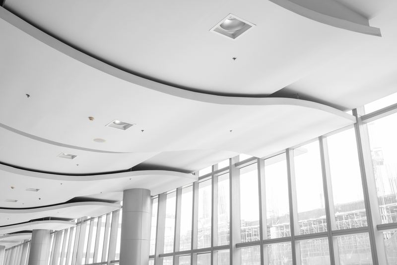
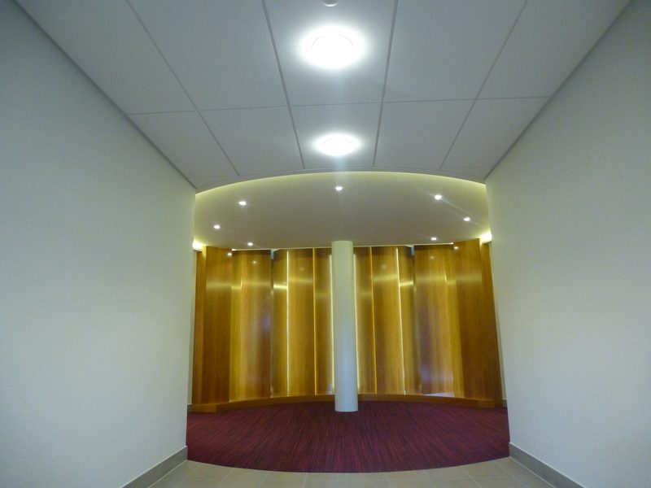
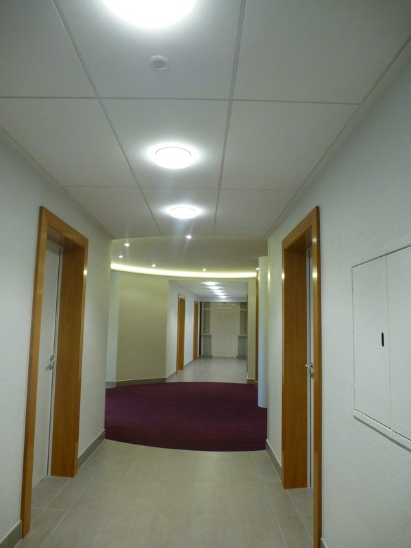
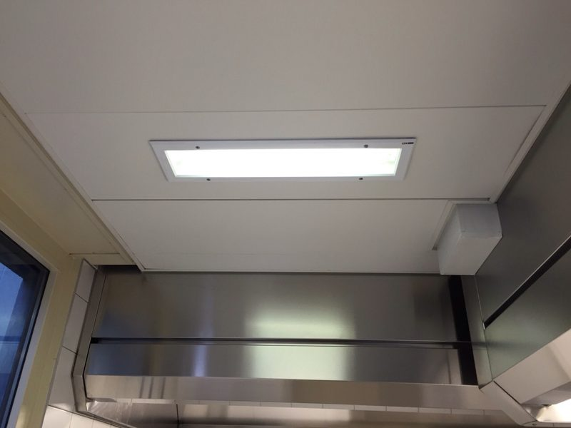

Des plafonds qui transforment le confort de vos espaces
Le plafond structure l'espace, améliore le confort sonore et participe à l'identité de votre lieu.

- Un seul interlocuteur De la pose à la peinture
- Visite et devis gratuits Sans engagement
- Registre du commerce Inscrite, vérifiable sur Zefix
Ils nous ont confié des travaux
Voir les 18 références

En faux plafonds, notamment pour Ville de Genève, Conservatoire de musique de Genève et Energestion. Et des particuliers de toute la région.
Performance technique et rendu esthétique
Nous concevons et posons des plafonds qui allient performance technique et rendu esthétique.
Nos plafonds réduisent la résonance dans une pièce et limitent la transmission du bruit entre les espaces : bureaux, restaurants, salles de réunion, écoles ou logements.

Ce que nos plafonds apportent
Correction acoustique
Moins d'écho et de résonance à l'intérieur de la pièce.
Isolation phonique
Le bruit ne passe plus d'un étage ou d'une pièce à l'autre.
Coupe-feu
Des solutions conformes aux exigences de sécurité incendie.
Nos plafonds
Cinq solutions, un plafond adapté à chaque usage

Tissu tendu Notre spécialité
Une surface parfaitement lisse et sur mesure, posée à froid. En version acoustique, elle absorbe le son tout en restant élégante. Idéale pour les bureaux, restaurants et salles de réunion.

Plaque de plâtre
Polyvalente, elle permet des plafonds lisses, des caissons, des jeux de niveaux et l'éclairage intégré. Elle existe en versions phoniques et coupe-feu.
Isolation en fibre de bois
Un isolant naturel posé au-dessus du faux plafond, invisible une fois les travaux terminés. Il renforce l'isolation thermique et phonique, quelle que soit la finition choisie.

Fibre minérale
Des dalles démontables qui gardent les réseaux techniques accessibles. Une solution efficace et économique pour les bureaux et les locaux professionnels.

Métallique
Des bacs métalliques résistants, faciles d'entretien, et acoustiques en version perforée. Pour les commerces, couloirs, cuisines professionnelles et espaces très fréquentés.
Vous hésitez entre plusieurs solutions ?
Nous analysons votre espace et vous conseillons le plafond le plus adapté à votre usage, à vos contraintes et à votre budget.
Demander conseil
Normes et conformité
Normes et prescriptions
Pour chacun de nos services, nous mettons en œuvre des systèmes certifiés, dans le respect des normes et prescriptions en vigueur.
| Service | Normes et prescriptions | Ce qu'elles encadrent |
|---|---|---|
| Faux plafonds | SIA 256 · SN EN 13964 · SIA 181 · AEAI | Conception et exécution des plafonds suspendus, performances phoniques, résistance au feu (EI 30, EI 60, EI 90). |
Les performances exigées sont définies pour chaque projet avec le maître d'ouvrage et ses mandataires.
Références en faux plafonds
Toutes les réalisations en faux plafonds
Grande salle : îlots en tissu tendu et éclairage indirect
- Lieu
- Grande salle
- Ce que nous avons fait
- Îlots en tissu tendu suspendus, éclairage indirect et puits de lumière.
Un chantier en quatre étapes
Notre méthode en détailVisite
Mesures et conseils, sur place.
Offre écrite
Poste par poste, en CHF.
Chantier protégé
Lieux protégés, nettoyés chaque soir.
Réception
Le tour des finitions, ensemble.
Questions fréquentes sur les faux plafonds
Une autre question ? Appelez le +41 22 771 20 15.
Quel faux plafond choisir pour réduire l'écho ?
Un plafond absorbant : tissu tendu acoustique, plaques perforées ou dalles en fibre minérale. Nous le choisissons selon l'usage de la pièce.
Peut-on garder l'accès aux réseaux techniques ?
Oui : les dalles en fibre minérale ou les bacs métalliques se démontent. En plaque de plâtre, nous prévoyons des trappes de visite.
Combien coûte un faux plafond ?
Le prix dépend de la surface, de la hauteur, du système choisi et des exigences acoustiques ou incendie. Après la visite, vous recevez une offre écrite.
Un faux plafond peut-il être coupe-feu ?
Oui. Plaques et systèmes certifiés existent en EI 30, EI 60 ou EI 90, selon les exigences du projet.
Demander un devis pour un faux plafond
Encore 2 étapes, moins d'une minute.
- Registre du commerce Inscrite, vérifiable sur Zefix
- Siège à Carouge Toute la Suisse romande
- Rappel le jour même Ou le jour ouvrable suivant
Vous préférez qu'on vous rappelle ?
Vous préférez qu'on vous rappelle ?
Laissez simplement votre numéro.
Ils nous ont confié des travaux

et des particuliers de toute la région.